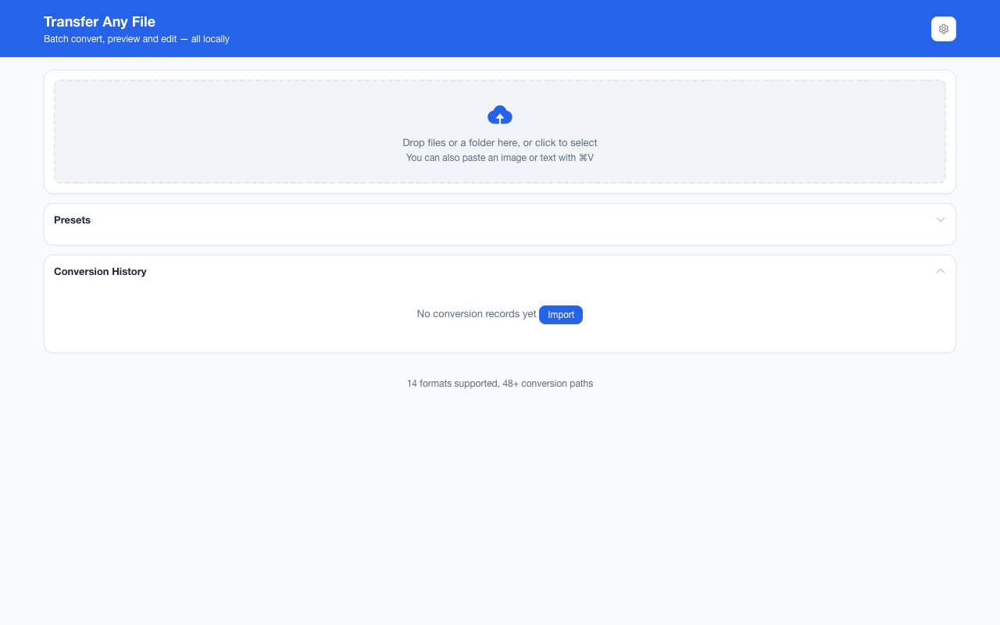

离线 · 无上传 · 浏览器本地完成Offline · no uploads · runs in the browser
JPEG 转 PDF——一张照片一页，会重编码一次Convert JPEG to PDF — one photo per page, through one re-encode
同样是图片进 PDF，JPEG 这条与 PNG 这条的区别就在「有没有重画一遍」。这条路把图解码到画布、先铺纯白、再按 JPEG 档编出来交给容器——尺寸上限与统一底色都是在这一步处理的。多数照片在这一步看不太出差别，但它确实是第二次有损编码；要尽量少损失，就先转 PNG、再由 PNG 出 PDF。页面尺寸按像素在 96 dpi 下换算，所以也不是 A4。Both put an image into a PDF, and the difference from the PNG route is whether the picture is redrawn. This one decodes the image onto a canvas, fills pure white, re-encodes it as JPEG and hands that to the container — the canvas is also where the size ceiling and a uniform background get handled. Most photographs show little of it, but it is a second lossy pass — for the least possible loss, convert to PNG first and take the PNG route, which embeds. The page is sized from pixels at 96 dpi, so this one is not A4 either.

这条链路怎么走How the route runs
JPEGJPEG PDFPDF
共 1 步，由扩展的路径搜索自动选出，中间产物不落盘。1 step, chosen by the extension's own path search; intermediate results never touch the disk.
会保留什么What carries over
- 一页一张图：页面尺寸由像素在 96 dpi 下换算，宽大于高自动横向One picture per page: the page is computed from the pixels at 96 dpi and goes landscape when it is wider than tall
- 重编码按 JPEG 载荷交给容器（质量参数 0.92 由编码器执行），照片类产物体积可控The re-encode is handed to the container as a JPEG stream (the encoder is given 0.92), so photographic output stays a manageable size
- 画布先铺纯白再画，不会出现黑底或来路不明的底色The canvas is filled pure white before the picture is drawn, so there is no black background and no browser-dependent one
- 超过 8192 px 的图先等比缩进上限，而不是静默裁切A side above 8192 px is scaled inside the limit first rather than silently clipped
- 一批最多 200 张、单个 100 MB 上限，各自一个 PDF，结果可一次打包成 ZIPUp to 200 files per batch and 100 MB each, one PDF per file, downloadable as one ZIP
如实说明的限制What it does not do
- 这是第二次有损编码：追求保真请先转 PNG，再走 PNG → PDF（那条不重编码）It is a second lossy pass: for fidelity convert to PNG first and take PNG → PDF, which embeds without re-encoding
- 不合并多页——一批 N 张就是 N 个 PDF，本项目没有拼 PDF 的能力No merging — N files are N PDFs, because joining PDFs is not something this extension does
- 没有文字层：PDF 里的图搜不到、也复制不出文字No text layer, so the picture cannot be searched or copied as text out of the PDF
- 页面不是 A4，且目标是 PDF 时输出参数面板不出现（DPI 只对 PDF 来源有意义）The page is not A4, and no output panel is offered for a PDF target (DPI means something only when the source is a PDF)
实操提示Working with it
- 典型用法是一批照片或截图各自变成一个可直接发送的单页 PDFThe typical use is a set of photos or screenshots, each becoming a one-page PDF you can send on its own
- 单个文件失败只报该文件的错误，批次里其余继续；结果文件名默认在源名后加日期与时间One bad file reports only itself while the batch continues, and names default to the source name plus date and time
常见问题Questions people actually ask
PDF 和原 JPEG 体积差不多，为什么？Why is the PDF about the same size as the JPEG?
因为 PDF 里装的就是重编码后的 JPEG 图像流，容器本身只加很少的开销。差多少取决于编码器在 0.92 档上对这张图的判断，不取决于「PDF 会不会压缩」。Because the PDF carries a re-encoded JPEG image stream and the container itself adds little. The difference comes from what the encoder decides at 0.92 for this picture, not from any compression PDF performs.
为什么颜色或细节有一点变化？Why did the colour or detail shift slightly?
这条链路是「解码 → 铺白 → 重新编码」。半透明边缘会被白底吃掉，细密纹理会被第二次量化影响。想避免就先转 PNG，再从 PNG 出 PDF。The route is decode, fill white, re-encode. Translucent edges get absorbed into the white and fine texture is affected by a second quantisation. To avoid both, convert to PNG first and take PNG → PDF.
能不能一次把 50 张照片装成一个 PDF？Can 50 photos go into one PDF at once?
不能，转换按文件一对一。要合册就用 PDF 侧的工具；本项目能给你的是 50 个单页 PDF 和一个装它们的 ZIP。No — conversion is one-to-one per file. Use a PDF-side tool for a booklet; what this gives you is 50 one-page PDFs and the ZIP that carries them.
不需要账号，也不需要联网：装好扩展后点图标，在新标签页里打开工作台，文件从磁盘直接选。No account and no network: install the extension, click its icon, and the workbench opens in a new tab reading straight off your disk.